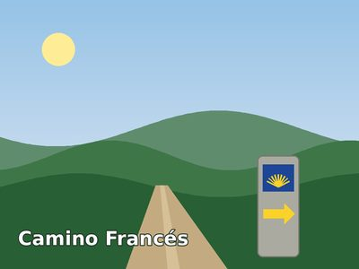

Mi experiencia

La primera etapa es la más dura por la bajada desde O Cebreiro, pero las vistas merecen la pena. A partir de Sarria se nota que hay mucha más gente, porque es donde empieza la mayoría para hacer los 100 km mínimos y conseguir la Compostela.
La etapa más larga es la de Palas de Rei a Arzúa, aunque se lleva bien si se sale temprano. Llegar a la plaza del Obradoiro después de una semana andando es lo mejor de todo el Camino.